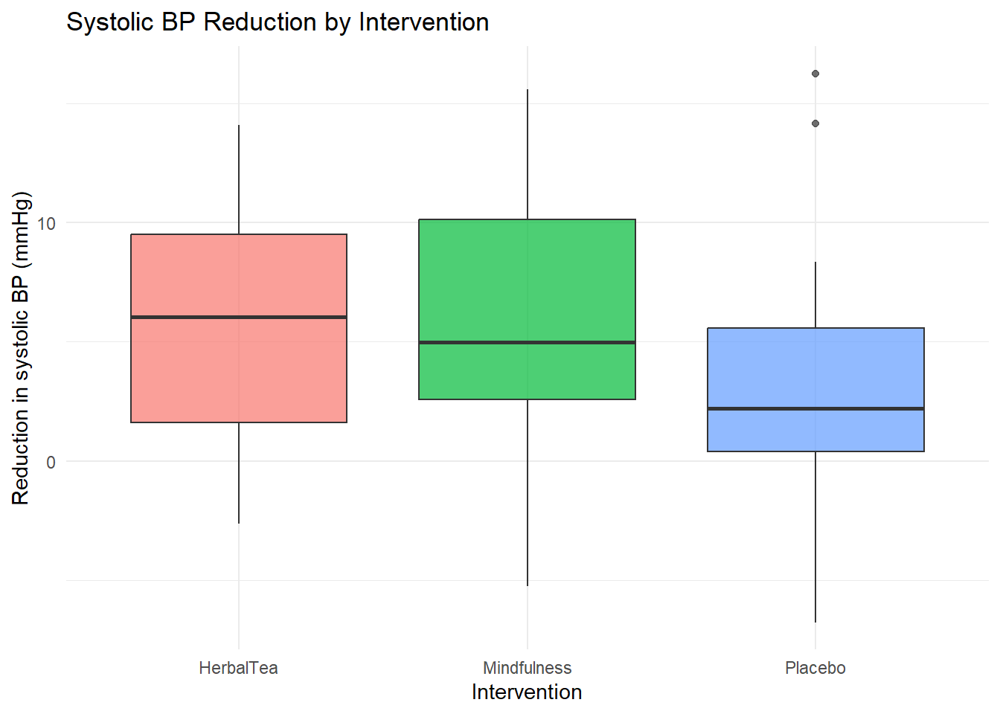

library(tidyverse)AE 06: Exam 02 Review
Important
This Application Exercise is due on Sunday, November 1 at 11:59pm. To be considered on time, the following must be done by the due date:
- Final
.pdffile submitted on Canvas
While late work is accepted for HW and Labs, no late work is accepted for AEs.
Exercises
- How can the below code be fixed to follow proper code style?
my_data <- data.frame(
id = 1:5,name = c("Alice", 'Bob', "Charlie", "David", "Eve"),
score=c(85,92,78,95,88)
)- How can the below code be fixed to follow proper code style?
df <- data.frame(grp = c("A","A","B","B","C","C"),
val=c(10,15,20,25,30,28))
ggplot(df, aes(x = grp,y=val)) +
geom_boxplot()+geom_point(position = position_jitter(width = .1))
meanvaluefromdataframe <- df |>
group_by(grp) |> summarise(m = mean(val))Suppose you have 100 samples of 100 observations each that are binary (0/1), each with probability of success \(p=.3\). What does the Central Limit Theorem say about the distribution of sample averages? (In other words, what would a histogram of the sample averages look like? Centered around which value?)
Researchers compare fasting glucose levels measured before and after a 12-week exercise program among the same participants.
Which type of t-test should they use & why?
Write the null hypothesis in words. What would the alternative for a two-sided test be?
A new rapid test for strep throat is being evaluated. Assume that \(H_0\) is that the person truly doesn’t have strep throat. What would a Type I error mean? What would a Type II error mean? What is a danger of a Type I error here? What is a danger of a Type II error here?
Explain how the t-distribution differs from the standard normal distribution. When would we use a t-distribution instead of Z?
Write the R code to find:
The 95th percentile of a t(df = 12) distribution.
The probability that a
t(df = 8)random variable is greater than 2.1.The 90th percentile of a \(N(\mu = 3, \sigma = 5)\) distribution.
What is the definition of a p-value?
ANOVA Review: Do holistic remedies lower systolic blood pressure?
A researcher tests whether three different interventions produce different reductions in systolic blood pressure (mmHg) after 8 weeks:
- Placebo (control tea)
- Herbal Tea (a marketed calming herbal blend)
- Mindfulness (guided mindfulness practice)
You will simulate data, visualize group differences, run an ANOVA, and interpret the results.
Exercise 9a: Simulate the data
We simulate 30 participants per group. The numbers are set so the placebo group has a small mean reduction, Herbal Tea a moderate reduction, and Mindfulness a larger reduction.
Run the following code to simulate the data.
set.seed(2025)
n <- 30
bp_data <- data.frame(
group = rep(c("Placebo", "HerbalTea", "Mindfulness"), each = n),
reduction = c(
rnorm(n, mean = 2, sd = 5), # Placebo: mean reduction ~2 mmHg
rnorm(n, mean = 5, sd = 5), # Herbal Tea: mean reduction ~5 mmHg
rnorm(n, mean = 7, sd = 5) # Mindfulness: mean reduction ~7 mmHg
)
)
head(bp_data) group reduction
1 Placebo 5.103784
2 Placebo 2.178207
3 Placebo 5.865772
4 Placebo 8.362445
5 Placebo 3.854877
6 Placebo 1.185728Exercise 9b: Visualize the data
Use the following code to create a boxplot of reduction by group. What pattern(s) do you notice?
ggplot(bp_data,
aes(x = group, y = reduction, fill = group)) +
geom_boxplot(alpha = 0.7) +
labs(title = "Systolic BP Reduction by Intervention",
x = "Intervention",
y = "Reduction in systolic BP (mmHg)") +
theme_minimal() +
theme(legend.position = "none")
[type response here]
Exercise 9c: Run the ANOVA
We test:
\(H_0\): mean reduction is the same in all groups
\(H_A\): at least one group is different
Assume a significance level of \(\alpha = 0.05\). Run an ANOVA using the syntax in the slides, printing out your output.
# type code hereExercise 9d: Conclusion
Based on your ANOVA result, what is your p-value? Do we reject or fail to reject \(H_0\)? What is your conclusion statement?
True/False
The value returned by
pnorm(.3, mean = 0, sd = 1)is larger than the value returned bypnorm(.1, mean = 0, sd = 1)In a paired t-test, the two groups must be independent of each other.
Holding all else constant, decreasing alpha generally increases power.
A Fisher’s exact test is preferred over a chi-square test when sample counts in each cell are \(\geq 10\).
Holding all else constant, a confidence interval using \(\alpha = 0.05\) would be narrower compared to a confidence interval using \(\alpha = 0.01\).
Submission
Render to html, print to PDF, and submit on Canvas > Assignments.